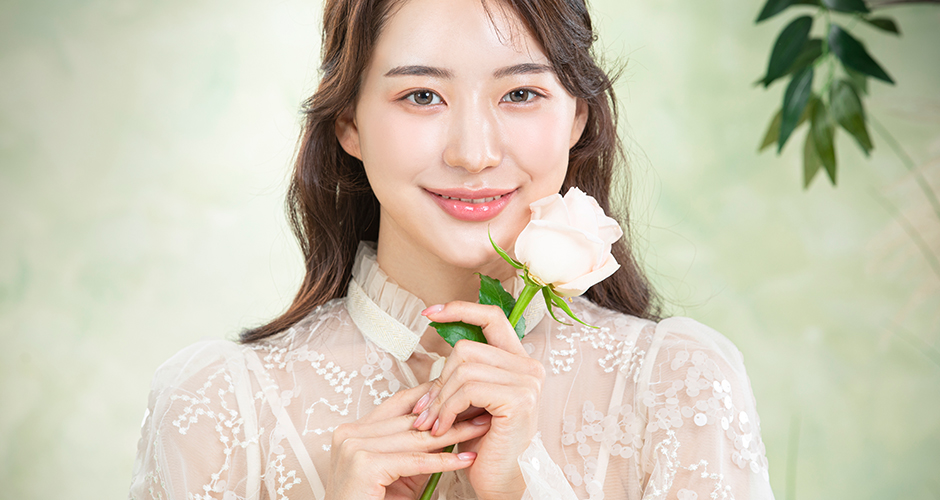
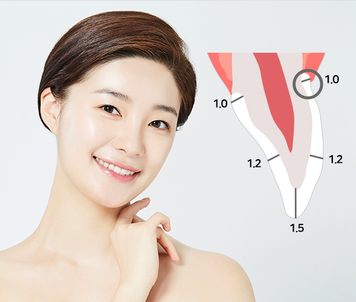
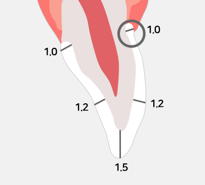
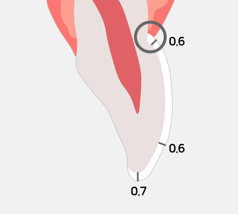
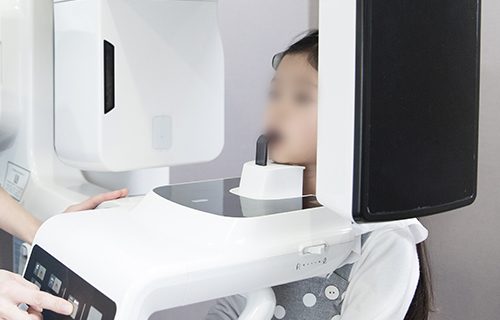
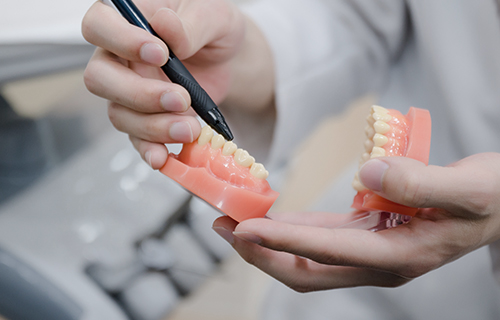
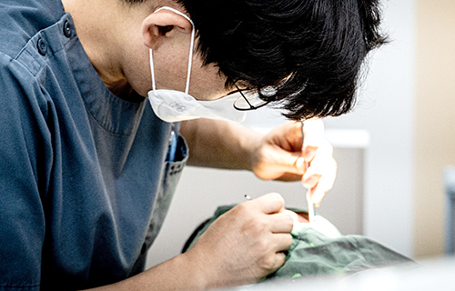
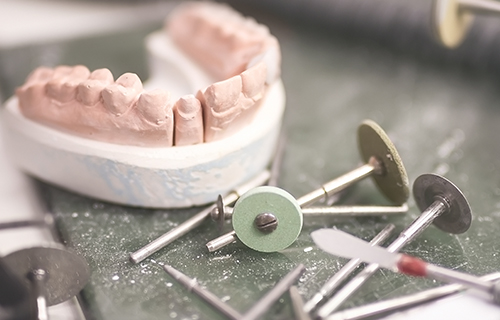
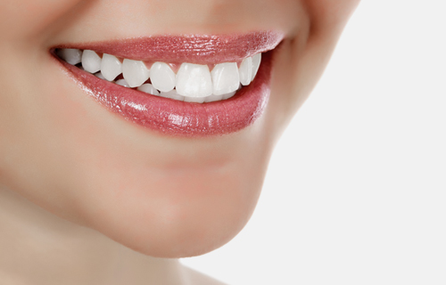

정밀 검사
치료 전 검사를 통해
환자분의 치아, 잇몸상태를 파악합니다
모자를 씌우듯 치아에 아름다움을 더해
자연스러운 미소를 완성합니다
ZERO DENTAL CLINIC
내 치아같은 자연스러움
치아색조를 가진 도자기(세라믹)로 치아를 전체 씌워주는 치료로
투명도가 높고, 심미적으로 우수하여, 앞니 치료에 적합합니다.

치아를 기둥모양으로 깎아내어
인공치아를 전체적으로 덮어 씌우는 치료방법이 올세라믹입니다.
이는 라미네이트와 비슷하면서도 다른 치료법이므로,
치아 상태나 원하는 효과에 따라 선택이 이루어져야 합니다.
라미네이트는 한 면을 깎아내고 도재를 붙이는 방식으로, 치아
전체적으로 덮어 씌우는 식으로 진행된다는 점이 큰 차이입니다.
따라서 튼튼하고, 씹는 힘이 더 강하길 원하는 심한 변색이나
돌출 치아 환자라면 심미치료법으로 올세라믹이 추천됩니다.
세라믹으로 된 도재관을 치아에 씌우는 올세라믹 치료 시
<%=m_client_name%>는 IVOCLAR사의 최신식 E-MAX 시스템을 이용한
강화된 도재를 사용합니다.
더욱 강한 올세라믹을 경험해보시기 바랍니다.

자연치아와
거의 비슷할 만큼
자연스러움
투명도가 매우
높은 재질이라
색상이 좋음
치아가 매우
단단한 성질을
가지게 됨
깨지거나 흠집이
나는 것에 대한
걱정이 적름
치아의 모양을
선택할 수
있음
치열 교정을
원해도
효과적임
치아의 뿌리를
건드리지 않고
치료가 가능
라미네이트나 올세라믹은 치아의 삭제가 동반되는 시술인 만큼 신중하게 고려하여 시술을 선택해야 합니다.
<%=m_client_name%>와 함께 시술 후 치아가 어떻게 변할지 확인 한 뒤
정확한 상담 후 상태에 알맞은 방법을 선택하시면 만족도를 높일 수 있습니다.
| 올세라믹 | 라미네이트 |
|---|---|
 |
 |
| 치아 전체에 도재를 덮어 씌움 | 치아 표면에 얇은 도재 부착 |
| 치아 삭제량 많음 | 치아 삭제량 적음 |
| 치아 강도 좋음 | 치아 가도가 떨어짐 |
| 부자적인 신경치료 필요 | 보철물 탈락 가능성 높음 |
앞니 파절
및 손상
치아의
변색
배역이 안
좋은 경우
앞니 사이가
벌어진 경우
치아가 고르지
못한 경우

치료 전 검사를 통해
환자분의 치아, 잇몸상태를 파악합니다

충분한 상담을 통해 환자분의 이미지에 맞는
치아를 구현하기 위한 치료계획을 계획합니다

올세라믹을 접착하기 위해
자연치아를 훼손하지
않는 선에서
치아다듬기를 진행합니다

원내 기공소에서 담당 의료진과의
협의를 통해
환자분에게 꼭 맞는
올세라믹를 제작합니다

완성된 올세라믹을 환자분께
보여드린 후
치아에 씌워 접착하여
올세라믹을 완성합니다